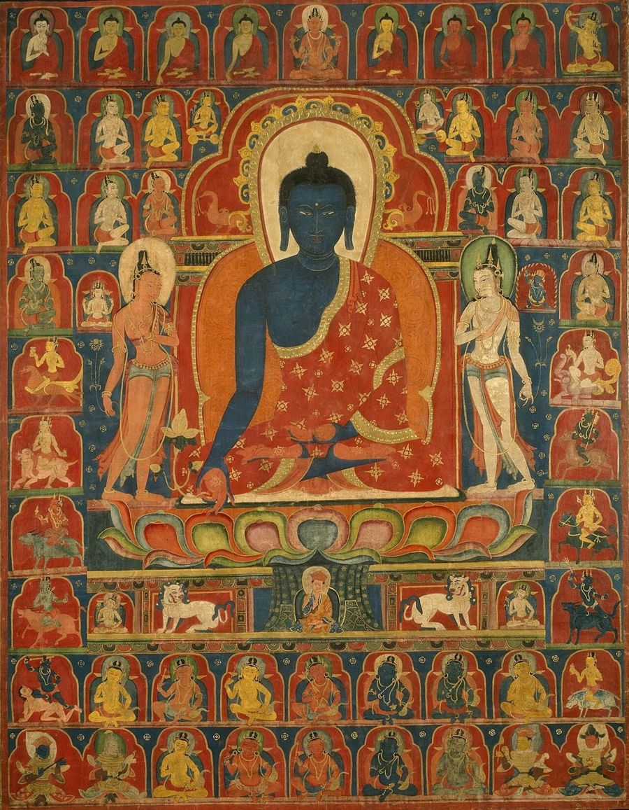
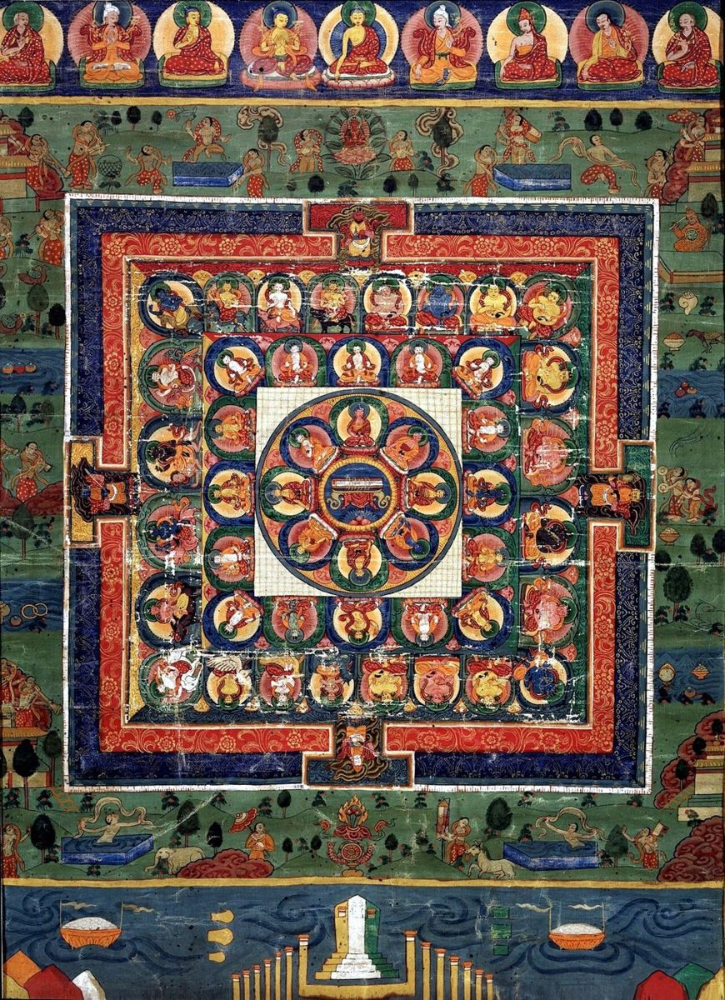

The Medicine Buddha Thangka: Meaning, Symbols, and How to Use It
Among all the figures painted on Tibetan scrolls, few are as instantly recognizable as the Medicine Buddha. His deep blue body, calm face, and the small bowl resting in his lap make him a favorite for homes, clinics, and meditation rooms around the world. People are drawn to him because he represents something everyone needs at some point: healing.
This article explains who the Medicine Buddha is, what each detail of a Medicine Buddha thangka means, how the painting is traditionally used in practice, and what to look for if you want one for your own space.
Who Is the Medicine Buddha?
The Medicine Buddha is known in Sanskrit as Bhaisajyaguru, which means "master of remedies," and in Tibetan as Sangye Menla. Mahayana Buddhist texts describe him as a Buddha who, while still a bodhisattva, made twelve great vows to relieve the suffering of beings. Those vows include healing illness, ending poverty, guiding people who have lost their way, and helping all beings find the path to awakening.
His practice became important across East Asia and the Himalayas. In Tibet, he is closely tied to the traditional medical system known as Sowa Rigpa, and the foundational medical text called the Four Tantras, or Gyushi, is traditionally presented as teachings given by the Medicine Buddha.

Reading the Painting: Key Symbols
The Deep Blue Body
The Medicine Buddha is painted a deep blue, the color of lapis lazuli. Texts describe his pure land as the realm of lapis light, and the stone's color is associated with depth, purity, and the clear nature of the mind. In a well-made thangka the blue has real depth, often built from mineral azurite with careful shading. You can learn how that blue is made in our guide to natural mineral pigments in thangka painting.
The Right Hand and the Healing Plant
His right hand rests near his right knee, palm facing outward in the gesture of generosity. Between his fingers he holds a stem of the myrobalan plant, called arura in Tibetan. Myrobalan is one of the most important ingredients in traditional Tibetan medicine and is sometimes called the king of medicines. The gesture shows that healing is offered freely.
The Left Hand and the Bowl
His left hand rests in his lap in the meditation gesture and holds an alms bowl. In many paintings the bowl contains nectar or medicinal fruit. The bowl reminds the viewer that the medicine comes from a calm, meditative mind as much as from herbs.
Posture, Robes, and Throne
He sits in the full cross-legged posture on a lotus and moon disk, wearing the patched robes of a monk. The robes show simplicity and renunciation. Above him there is usually a halo and an aureole of light, and behind him a landscape or a richly decorated throne back.
Common Compositions You Will See
A Medicine Buddha thangka can be simple or very complex. The most common layouts include:
- Single figure. The Medicine Buddha alone at the center, with a landscape background. This is the most popular choice for homes.
- With attendants. The bodhisattvas of sunlight and moonlight, Suryaprabha and Chandraprabha, stand on either side.
- The Eight Medicine Buddhas. Seven healing Buddhas plus Shakyamuni Buddha are arranged together, often in rows or around the central figure.
- Medicine Buddha mandala. A full mandala showing the palace and retinue, used in more advanced practice.
Each layout is correct; the choice depends on your space and how you plan to use the painting. If you are unsure, a single-figure composition is calm, readable, and easy to live with. When you are comparing options, Buy authentic thangka painting from a studio that will explain the composition and the painter's lineage rather than just sending a stock photo.
The Medicine Buddha Mantra
The Medicine Buddha is associated with a well-known mantra, commonly written as: Tayata Om Bekandze Bekandze Maha Bekandze Radza Samudgate Soha. Practitioners recite it while visualizing blue healing light flowing from the Buddha's heart and dissolving illness and negative emotion. Many people recite it for a sick friend, a family member, or themselves.
You do not need to be a Buddhist to appreciate the painting, but if you would like to use it in practice, it is best to learn the visualization and pronunciation from a qualified teacher.
How the Thangka Is Used in Practice
In Tibetan tradition, a thangka is a support for meditation. A practitioner sits facing the painting, studies its details, then closes their eyes and tries to hold the image in the mind. Over time, the visualized Medicine Buddha becomes a symbol of the healing potential within the practitioner's own mind.
Traditional Tibetan doctors have long kept images of the Medicine Buddha in their clinics, and some still begin the preparation of medicines with prayers to him. Today, many yoga studios, therapists, and hospital chaplaincy rooms display his image as a reminder of compassion and care.
Where to Place a Medicine Buddha Thangka at Home
- Height. Hang it at or above eye level, never on the floor or below seating.
- Location. A quiet room is ideal, such as a meditation corner, study, or bedroom. Many people avoid bathrooms and kitchens.
- Light. Choose soft, indirect light. Direct sun can fade organic dyes over time.
- Respect. Keep the space around it tidy, and avoid placing shoes or clutter beneath it.
Some practitioners like to hang the Medicine Buddha on an east-facing wall, because his pure land is described as lying in the east. This is a nice gesture, not a strict rule.
What to Look For When Buying
A quality Medicine Buddha thangka should show correct iconography: blue body, myrobalan in the right hand, bowl in the left, monk's robes, and a calm, symmetrical face. Look closely at the eyes, which are traditionally painted last and give the figure its presence. Fine gold line work, smooth shading in the robes, and an even blue body are good signs of skill.
Ask the seller whether the painting is hand-painted, which pigments were used, and how long it took. A good studio will answer clearly and send close-up photos. When the answers satisfy you, Buy authentic thangka painting and let the image become part of your daily space.

Frequently Asked Questions
Can I give a Medicine Buddha thangka as a gift?
Yes. It is a thoughtful gift for someone who is recovering from illness, working in healthcare, or starting a meditation practice.
Does the painting need to be blessed?
Many owners ask a monastery or teacher to consecrate their thangka, but it is a personal choice. The painting can still be appreciated as sacred art without it.
What size is best for a home?
For a small room or altar, a painted area of about 12 to 20 inches tall works well. Larger rooms can hold larger scrolls with full brocade mounts.
Is the Medicine Buddha the same as the historical Buddha?
No. Shakyamuni is the historical Buddha. The Medicine Buddha is a distinct Buddha described in Mahayana texts, though the two often appear together in the Eight Medicine Buddhas composition.
Conclusion
The Medicine Buddha thangka brings together deep blue color, careful symbolism, and a simple promise of healing. Once you know what the plant, the bowl, the hand gestures, and the lapis body mean, the painting stops being just a beautiful image and becomes a quiet daily reminder to care for your body, your mind, and the people around you. Choose a piece with correct iconography and honest craftsmanship, and it will serve you for many years.